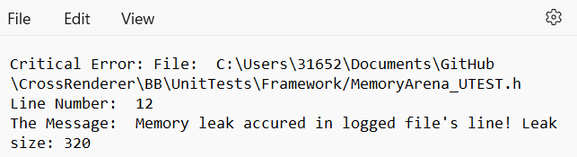

Intro
BBFramework is a custom STL data storage replacement library created by myself to understand low-level memory management concepts, data storage containers and general low-level utilities.
The framework is made to be used as the main toolkit for data storage, memory management and platform API access, replacing common STL types such as vectors and maps with my own versions.
Contents
Backing Allocator
Virtual Memory
The backing allocator allocates virtual address space using the virtual allocation API's VirtualAlloc (Windows) & MMAP(Linux)
This will always be the basis for all allocators to reduce the amount of kernel calls and to allow resizing.
Virtual allocation example
Below is the function to allocate virtual memory, the mother of all allocations in the BB framework.
It is purpose made to be able to commit more memory in a continuous memory range. This avoids the need to copy over large memory addresses when an allocator goes over it's size.'
Standard Allocators
This framework currently has 4 Allocators, a linear allocator, fixed linear allocator, freelist and a power-of-two freelist allocator.
All these allocators get their memory from the virtual backing allocator and support resizing.
All the allocators are unit tested for allocating, freeing and resizing.
Below you see an example of me using the Googletest library to unit test all allocators.
Allocator Debug tools
Allocation Log per allocation
On debug additional memory will be requested for an allocation log. This holds critical info that is required for debug purposes for boundry checking and checking for leaks when an allocator is destroyed.
When a leak happens it will log this in a .txt file and console with with line and filename.
Below you see how allocation/deallocation is done with the allocation logs
Data containers
With the allocators we can make data containers such as dynamic arrays, hashmaps, pools and more.
Below is an example of using C++ 17 compile time checks to see if templated types are RAI or non-RAI. This way perfomance is held high by avoiding calling destructors and constructors.
Slotmap and C++ 17 template compile checks
Below you see a slotmap example with modern C++ usage of compile time checks to add/remove code.
This website was partially made with the thanks of our wonderful new technology, ChatGPT